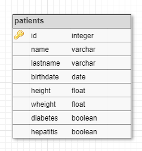

Donades les tuples de la següent relació:

Realitza les següents consultes:
SELECT *
FROM patients
SELECT *
FROM patients
WHERE LOWER(name) LIKE %pa% OR LOWER(lastname) LIKE %er%
SELECT name, lastname, birthdate
FROM patients
WHERE birthdate BETWEEN '1707-04-15' AND '1937-12-26'
SELECT name, lastname, weight/height^2 AS ims
FROM patients
WHERE weight/height^2 < 18.5
SELECT name, lastname, weight/height^2 AS ims
FROM patients
WHERE weight/height^2 > 25 AND (diabetes IS TRUE || hepatitis IS TRUE)
Input Format
El primer nombre indica el la quantitat de tuples que venen a continuació.
El format de cada tupla és:
id lastname, name, birthdate, height, weight, diabetes, hepatitis
Els valors de l'atribut birthdate estan en format 'YYYY-MM-DD'
Els booleans s'expresen amb {0|1}
En les dades d'entrada poden haver diversos espais en blanc entre els diferents atributs.
Constraints
-
Output Format
El format de sortida serà en format taula:
col1 |col2 |col3
-------+-------+-------
val |val |val
val |val |val
Els noms de les columnes s'aliniaran a l'esquerra.
El format dels valors ha de ser:
S'ha de deixar una separació de 2 salts de línia entre cada resultat.
Sample Input 0
10
1 of Samos, Pyhtagoras, -0570-01-01, 1.75, 63.2, 0, 0
2 of Alexandria, Hypatia, 0350-01-01, 1.59, 46.1, 0, 1
3 Cardano, Gerolamo, 1501-09-24, 1.73, 69.2, 1, 0
4 Euler, Leonhard, 1707-04-15, 1.64, 59.9, 1, 1
5 Gauss, Carl, 1777-04-30, 1.70, 92.2, 1, 0
6 Cantor, Georg, 1845-03-03, 1.75, 75.2, 0, 0
7 Erdos, Paul, 1913-03-26, 1.76, 56.6, 1, 1
8 Conway, John, 1937-12-26, 1.72, 88.2, 0, 1
9 Perelman, Grigori, 1966-06-13, 1.90, 89.9, 1, 1
10 Tao, Terry, 1975-07-17, 1.74, 68.4, 0, 0
Sample Output 0
id |name |lastname |birthdate |height |wheight |diabetes |hepatitis
----+----------------+----------------+------------+--------+--------+----------+----------
1 |Pyhtagoras |of Samos | -0570-01-01| 1.75| 63.20| false| false
2 |Hypatia |of Alexandria | 0350-01-01| 1.59| 46.10| false| true
3 |Gerolamo |Cardano | 1501-09-24| 1.73| 69.20| true| false
4 |Leonhard |Euler | 1707-04-15| 1.64| 59.90| true| true
5 |Carl |Gauss | 1777-04-30| 1.70| 92.20| true| false
6 |Georg |Cantor | 1845-03-03| 1.75| 75.20| false| false
7 |Paul |Erdos | 1913-03-26| 1.76| 56.60| true| true
8 |John |Conway | 1937-12-26| 1.72| 88.20| false| true
9 |Grigori |Perelman | 1966-06-13| 1.90| 89.90| true| true
10 |Terry |Tao | 1975-07-17| 1.74| 68.40| false| false
id |name |lastname |birthdate |height |wheight |diabetes |hepatitis
----+----------------+----------------+------------+--------+--------+----------+----------
2 |Hypatia |of Alexandria | 0350-01-01| 1.59| 46.10| false| true
4 |Leonhard |Euler | 1707-04-15| 1.64| 59.90| true| true
7 |Paul |Erdos | 1913-03-26| 1.76| 56.60| true| true
9 |Grigori |Perelman | 1966-06-13| 1.90| 89.90| true| true
name |lastname |birthdate
----------------+----------------+------------
Leonhard |Euler | 1707-04-15
Carl |Gauss | 1777-04-30
Georg |Cantor | 1845-03-03
Paul |Erdos | 1913-03-26
John |Conway | 1937-12-26
name |lastname |ims
----------------+----------------+--------
Hypatia |of Alexandria | 18.24
Paul |Erdos | 18.27
name |lastname |ims
----------------+----------------+--------
Carl |Gauss | 31.90
John |Conway | 29.81